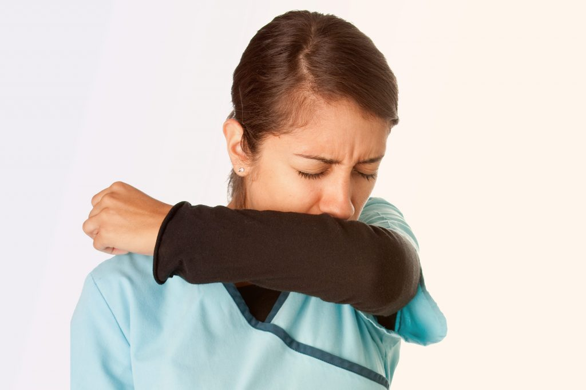
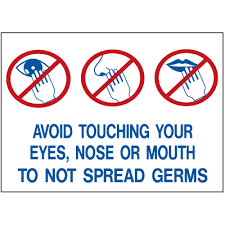

Corona Virus

What is Coronavirus?
Coronavirus disease (COVID-19) is an infectious disease caused by a newly discovered coronavirus.
How do it spread?
The COVID-19 virus spreads primarily trough droplets of saliva or discharge from the nose when an infected person coughs or sneezes.
Sympyoms
People may be sick with the virus for 1 to 14 days before developing symptoms.the most common symptoms of coronavirus disease (COVID-19) are fever tiredness and dry cough.Most people(about 80%) recover from the disease without needing special treatment
More rarely,the disease can be serious and even fetal. older people,and people with other medical conditions(sch as asthma, diabetes or heart diseases) may be more vulnerable to becoming sevrely ill.
People may experience:
- cough
- fever
- tiredness
- difficulty breathing(severe cases)
Prevention
there's currently no vaccine to prevent coronavirus disease.
You can protect yourself and help prevent spreading the virus to others if you:
do
- Wash your hands redulary for 20 seconds,with soap and water or alcohol based hand rub.
- Cover your nose and mouth with disposable tissue or flexed elbow when you cough or sneeze. 
- Avoid close contact (1m or 3 feet) with people who are unwell.
- stay home and self-isolate from others in the household if you feel unwell.

don't
- Touch your eyes,nose or mouth if your hands are not clean.
